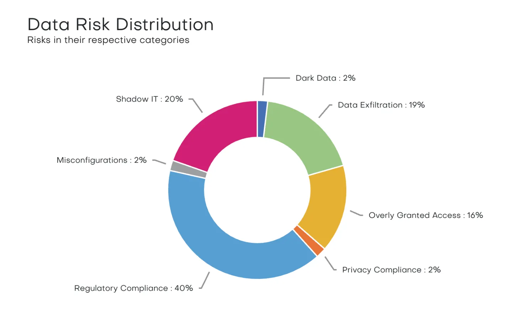

Screenshot frame — pick a background
Same screenshot, 5 backgrounds. Tell me which number and I'll apply it to the Snowflake partner page.
Variant 1 · Soft mint with dot grid

Variant 2 · Eden dark with sparkle & glow
Variant 3 · White with corner glows
Variant 4 · Solid pine-green dots
Variant 5 · Mint pinstripe with corner glow